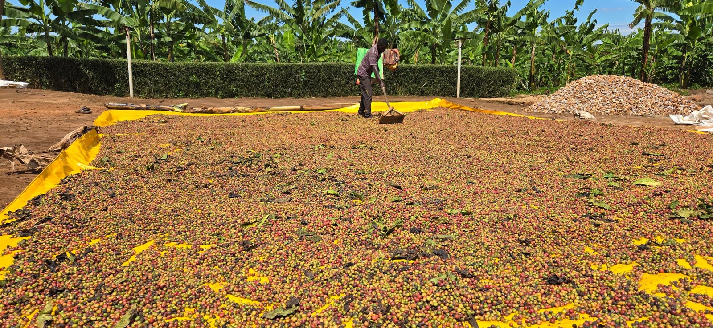

Rwenzori coffee
Grown in volcanic soils along the slopes of Mount Rwenzori in western Uganda.
Enquire about this coffee ↗Nkoma Commodities Ltd · Uganda
An agricultural commodities trading company with coffee at its heart. We source, finance, process and export Arabica and Robusta grown across Uganda.
Nkoma / at a glance
Our goal is to support, promote and export coffee grown and processed in Uganda. We work with farmers, cooperatives, associations and farmer groups across the country’s major coffee-growing regions.
Meet Nkoma ↗
Coffee handling at origin / UgandaSourcing · logistics · quality control
We source coffee through a network of farmers and cooperative groups, manage preparation and export processing, and coordinate handling and logistics.
Our Ugandan coffees

Grown in volcanic soils along the slopes of Mount Rwenzori in western Uganda.
Enquire about this coffee ↗Grown on the slopes of Mount Muhavura. Lively acidity, a creamy mouthfeel, sweet flavour and a pleasantly lingering aftertaste.
Enquire about this coffee ↗Grown in the southwestern highlands. A well-balanced cup with crisp acidity, a smooth mouthfeel and rich flavour.
Enquire about this coffee ↗Fully washed Arabica grown in volcanic soils on the slopes of Mount Elgon. A round-bodied brew with complex flavour, lively acidity and a pleasant lingering finish.
Enquire about this coffee ↗Grown in the eastern highlands. A smooth body, sweet flavour, refined acidity and a pleasantly lingering aftertaste.
Enquire about this coffee ↗Scroll to explore the five origins →
The coffee window


Tell Nkoma what you are looking for: coffee type, preparation, expected quantity, destination and timing.
Begin a trade enquiry ↗